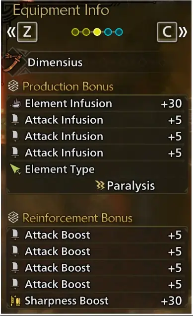
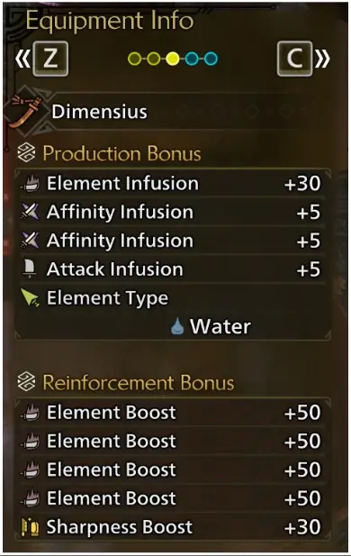
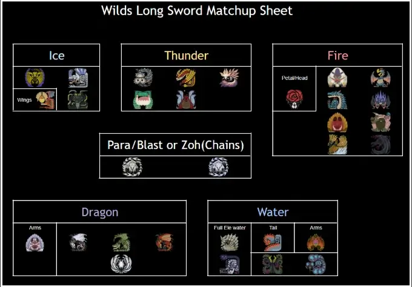

This guide was written by timmy and Mikalya.
Wilds Longsword is so fun and cool and exciting in this perfect game with no flaws and we love pressing the same 2 button combo the entire hunt
Food Skills
Cat:
Just use Lala Barina weapon and cripple monsters lmao
Skill Priority
Importance
Skill, Level, (Abbreviation)
Notes
1
Weakness Exploit
All these Skills share two crucial things in common: They give affinity and they are on Armor.
Crit is very important for Longsword for not only damage but also Sharpness maintenance via Master’s Touch.
1
Maximum Might
1
2 Piece Gore + Antivirus 3
1
Agitator
Less affinity than Wex, but also gives raw.
1
Quick Sheathe 3
Massively speeds up Special Sheathe with the speed being somewhere between Iceborne and Sunbreak, allowing you to go for ISS much more easily.
1
Counterstrike
+10-25 Raw for 30-45 seconds after getting hit with an attack that would knock you back. Hyper armor counts.
Also can be refreshed during its duration, making it easy to maintain.
1
Burst 1
+8/6 Raw/Ele for 3 seconds after hitting a monster 5 times. Very efficient 1 point skill.
2
Adrenaline Rush
Foresight Slash activates Adrenaline Rush which is a 10-30 Raw boost for 30 seconds. Does not refresh until the duration is over, so less reliable than Counterstrike.
2
Coalescence
5-15% Element increase after curing a status.
2
Burst 2-5
Adds 2/2/3/3 raw for lvl 2-5 and 2 ele per level, only worth for full element sets.
2.1A - Skill Priority Table
Weapon Skill Priority
Importance
Skill, Level, (Abbreviation)
Notes
1
Critical Boost 5
The strongest skill in the game for raw sets.
1
Master's Touch
Extremely important sharpness management tool due to LS’s current optimal combo.
2
Ele Attack 3
For Elemental sets only.
2
Critical Element 3
+15% Elemental damage on critical hits. Only used for Full Elemental set.
2.1B - Weapon Skill Priority Table
Ultimately, there is no stand-out absolute banger meal that will make a ginormous impact, so eating whatever is available or cooked by villagers or even just Meat is good enough.
Black Belt (Hi) (Droolshroom) reduces the stamina consumption of Foresight Slash.
Paired with Constitution 3, this helps maintain Maximum Might.
Cat unlocks extra abilities by doing its Side Quests, namely:
Cats max out at level 30.
Element Artian with Raw focused sets are currently the best option for Longsword. Status Artians can be used for general use, but keep in mind element adds around 5-10% damage depending on matchup.
While worse than Element, Status Artians are good for general use. Prioritize Paralysis and Blast, the other two statuses have little value. Craftables will be included as alternative, weaker options (provided they are competitive with Artian).
| Ele | Best Weapon | Craftable Alternative |
|---|---|---|
 |
Dimensius/Artian | Wyvern Blade “Lily” |
 |
Dimensius/Artian | Tamonowo |
 |
Dimensius/Artian | Heaven’s Thunder |
 |
Dimensius/Artian | N/A |
 |
Dimensius/Artian | Blazing Rafel |
 |
Dimensius/Artian | Lala Ornithocton |
 |
Dimensius/Artian | N/A |
Fig. 3.1A - Weapon Recommendations |

Open image in new Tab
Fig 3.2.1A - Status/Element Infusions and Reinforcements
While 7 attack is optimal, it’s worth noting that having 1-3 affinity in place of attack is fine - the damage difference is fairly small. What matters is having 1 Sharpness and no Element.

Open image in new Tab
Fig 3.2.2A - Full Element Infusions and Reinforcements
Only Water is worth using for full Element due to the only 2 favorable matchups being Water.
Open image in new Tab
Fig 3.2.3A - 9 star comfort Infusions and Reinforcements.
This is a variant of the artisan shown in 3.2.1, this one is specific for 9 star hunts since those monsters having quite high HP, there is a chance to run into sharpness issues, an extra roll of Sharpness Boost helps to mitigate such a thing.
Because Element comes at no cost on Artian, it is optimal to go for raw sets while matching element.
Standard set with Agitator 5 and Wex 5. Also has Counterstrike 3, which is good if you're able to maintain the buff through hyper armor (After ISS, Spirit Thrust, Spirit Release Slash, Iai Slash, end of FSS, after Spirit Charge on Red, Focus Strike).
Variation with Adrenaline Rush 3 and 2P Gore instead of Agitator. Always better against Guardians (since Agi is bad on them). and better than the previous set with ~50% Adrenaline Rush uptime.
Currently the best craftable LS. Will lose to Element Artian (even against dragon), but slightly outdamages Status Artian. Use this if you don’t want to use Artian. Other non-Artian Longswords will also work with this build, so use whichever one you prefer (for the drip).
With the addition of AT Rey Dau, we got the Lord’s Soul group skill. This gives 5% base raw + Guts (protection from a single cart), and the raw bonus lasts until Guts is used up. Moxie Food skill can be used as an extra safeguard, allowing you to survive two carts and keep the raw bonus for one.
It is important to note that these sets will partially rely on Latent Power for affinity. Due to this, these sets will only be worthwhile when you can easily proc the skill. This will be on matchups that do significant damage that you can hyper armor through, such as Zoh Shia or Arkveld.
Latent Power is activated when you take 130 total damage. Hyper armor counts toward this, so LS has a relatively easy way of tanking damage for LP. Once the skill is active, it lasts for 2 mins (2.5 mins with 2P Rey, 3.5 mins with 4P). The cooldown cannot be refreshed once it is active.
When Latent Power is up, these sets will outperform the standard sets by around 3-4%. When LP is down, they lose by around 2%.
The addition of AT Uth Duna gave us a decent legpiece, which allows for a minor upgrade from 3P AT Rey.
New AT Wex set using Udra parts, shared and courtesy of hyperknight72, better than standard Wex option, still worse than AT Rey + Uth, good option for someone who doesn't wish to deal with Latent Power despite the damage lost.
Anti-Odogaron set. Odo is super weak to water, so investing in Element Attack/Critical Element will be more damage. Counterstrike is omitted due to many of its attacks giving Dragonblight - tanking them with hyper armor will remove all your element damage. Wex is used over Agi since Odo is a Guardian.
Gravios’ Belly has a terrible raw but high water hitzone until it's broken, then it becomes high raw and even higher water. This means that it's worth investing into both element and raw, so a full water Artian LS with the standard raw Agi set will be used.

Open image in new tab
4.0A - Meta Matchup Sheet
Due to RNG-Less options in the Meta Section above, this Section was deemed unnecessary for the purpose of this guide.
-Sasch
Crit Draw is actually decent in Wilds, giving 100% affinity for 3s after a draw attack. Of course, this works on both ISS and Iai Slash, and you can even fit one Crimson Combo after ISS with full crit. Unfortunately, this set falls off hard for both extended Crimson Combos and SHB SRS as crit draw will not apply to those. Use this set if you like spamming ISS.
With the buff to both Evasion Mantle and Max Might, this set is actually pretty decent. Foresight Slash works with Evasion Mantle and Adrenaline Rush for a large damage boost (50% attack for 3s, +30 for 30s). Unfortunately, Evasion Mantle only lasts 105s, after which this set falls off hard.
TU2 added Lagiacrus and Seregios.
- Both Longswords are nothing special, Artian and Zoh are still best.
- Lagiacrus has some good armor pieces, but Seregios armor isn’t useful.
- Also added Adrenaline Rush 3 charm which allows for slightly more damage.
- Spirit Release Slash, among other things, received a buff, while Crimson I received a slight nerf.
AT Uth update added new armor.
Only the legs are useful for LS.
TU1 added Zoh Shia and Mizutsune.
- Zoh LS is the new best craftable, and is also competitive with Status Artian.
- Zoh Helm and Chest are efficient Agi pieces so they are used.
- Mizutsune LS is now the best water craftable. Still loses to Artian.
AT Rey update added new armor.
- 3P AT rey set bonus gives Lord’s Soul which is 5% raw bonus and Guts (prevents one cart), making it a strong option. However, the raw bonus is lost after Guts is activated.
- While the Latent Power that comes with AT Rey armor is less consistent affinity compared to 2P Gore, the raw bonus from Lord’s Soul can make up for it.
- Q: Why no Focus or Power Prolonger?
- A: LS has enough tools (Spirit Charge, FSS, ISS, Focus Strike) to reach and maintain Red Spirit without them.
- Q: Why is Quick Sheathe 3 so important?
- A: The best way to gain Spirit Gauge is through Special Sheathe -> ISS. Quick Sheathe speeds up the sheathing animation for Special Sheathe, making it very good for LS.
- Q: How does Flayer work?
- A: It makes wounds appear faster. Also builds up like a status, then does damage as a small explosion. Does not work for most relevant LS attacks, so not worth using.
- Q: How does Whiteflame Torrent work?
- A: Has a small chance to deal 50 flat damage on certain attacks, but has a 3s cooldown. Will proc every ~7-8s or so.
- Q: Why do the builds have no mantles?
- A: Because they don’t reset on Quest Start/End. You’re free to use whichever you like.
- Q: Why not Partbreaker, it says it increases Focus Strike damage?
- A: It does currently not increase Focus Strike damage. It does, however, increase damage wounds deal when they are broken, by the specified amount in the skills description.
- Q: Why do the sets overcap affinity? Frenzy gives 15% and Antivirus 3 gives 15%!
- A: Frenzy gives 15% when cured. Antivirus only gives 10%. The english description is wrong.
- Q: Why do the decorations in my set not save properly?
- A: That feature is currently bugged, we don’t know why.
- Q: How much does Power Charm add?
- A: Power Charm grants +6 Raw.
- Q: How long do Might Seed, Demon Powder, and Demondrug last?
- A: Seed and Powder last 3 minutes each, drug lasts 30 minutes. The timer does not tick down in Base Camp.
- Q: How does Self Improvement work?
- A: Every 5 minutes, you gain +5 Raw, until the cap at 30 Raw after 30 Minutes.
- Q: Why do I randomly get disconnected from MP? Why am I still in the hunt/group/lobby after disconnecting? Why do monsters teleport?
- A: Multiplayer is currently bugged.
- Q: I cut off a monster’s tail, why did it become a different monster’s material?
- A: Cutting off and carving tails does not currently function as intended.
- Q: Why can’t I talk to certain NPCs?
- A: NPC interaction detection currently isn’t working properly. If you’re too close to an NPC, you cannot talk to them.
- Q: Why do the sets have Constitution 3?
- A: Foresight Slash uses stamina, and Maximum Might requires stamina to function. Constitution 3 + Black Belt (Hi) meal allows for more Maximum Might uptime with FSS.
- Q: Should I play Longsword?
- A: Why are you here?
- Wilds Ass (external website, opens in new tab)
- Collection of datamines (Google Docs, opens in new tab)
- Wilds Builder (external website, opens in new tab)
- Kiranico Wilds Database (external website, opens in new tab)
I’d like to thank:
- Sasch, Kat, and Upgreid for heading the Wiggler Project;
- Zero, who helped format this guide;
- jerrynt, who turned the matchup table into an actual chart;
- suzi, Ithmari, FJC, and the rest of #long_sword chat for all the helpful discussions, suggestions, and feedback;
- the rest of the Wiggler Team